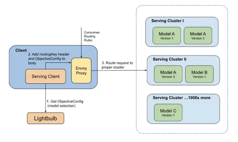

В наши дни большинство рекомендательных сервисов используют ML-модели: от линейных и градиентного бустинга до развесистых нейросетей. Если в продукте появляется первая поверхность для подключения продвинутых рекомендательных технологий, то самое простое — внедрить нужную модель в бэкенд сервиса.
Однако после запуска всё только начинается. Нужно как-то обновлять модели, тестировать новые архитектуры, подключать новые рекомендательные сценарии и при этом не упереться в ограничения железа.
Сегодня разбираем пост, в котором описана инфраструктура для инференса ML-моделей в Netflix. Посмотрим, как они решают эти вопросы в рамках своей платформы Switchboard.
Ключевые принципы платформы:
В Netflix используют более широкое понятие serving: кроме самого инференса модели, оно включает получение данных из внешних сервисов по идентификаторам из «контекста», расчёт фичей поверх входных данных, которые идут на вход в инференс, запуск модели и пост-обработку результатов.
Но есть три критичные проблемы:
1. Switchboard становится единой точкой отказа — любой сбой на уровне входной прокси может задеть много ML-сценариев.
2. Появляется просадка по latency (~10–20 мс): дополнительный сетевой хоп, обработка входного payload'а (парсинг всего запроса для определения Objective и параметров, необходимых для управления трафиком) и нарезка A/B-экспериментов (тоже через внешний сервис).
3. «Шумные соседи»: клиенты могут неожиданно повысить нагрузку и неявно помешать запросам других клиентов.
Тогда в Netflix решают аккуратно избавиться от единой прокси в Switchboard. Но при этом важно не потерять классные свойства и абстракции, которые уже устоялись. Нужно, чтобы в клиенте появилась вся информация, которой владеет Switchboard, для определения, куда именно проксировать запрос.
Логику Switchboard делят на два компонента, которые скрыли в более умном клиенте на стороне продуктового кода:
1. Появляется отдельный легковесный сервис Lightbulb, в который клиенту надо отправить нужные «контекстные» данные и получить информацию, какую модель (routingKey) надо считать (по сути, нарезка трафика для необходимых кейсов).
2. Локально поднимается Envoy-прокси, куда независимо доставляют маппинги, на каких хостах какие ML-модели живут (routingKey → hosts).
Со стороны клиента остаётся пробросить routingKey в хедерах запроса в локальный Envoy, который согласно своим маппингам сделает запрос в нужный хост.
В итоге удалось избавиться от единой прокси и дополнительного сетевого хопа, а также от лишнего парсинга запроса на стороне Switchboard в пользу легковесных запросов в Lightbulb. И сохранить все продуктовые свойства платформы тоже удалось.
Ребята из Netflix репортят это как заслуженный успех, но часть деталей в статье не раскрыта и, скорее всего, требует отдельной проработки. Например, не сказано, что происходит в случае сбоев Lightbulb, который по сути стал новой единой точкой отказа и как происходит расселение ML-моделей по хостам. Поэтому ждём от Netflix постов с новыми деталями.
@RecSysChannel
Разбор подготовил
